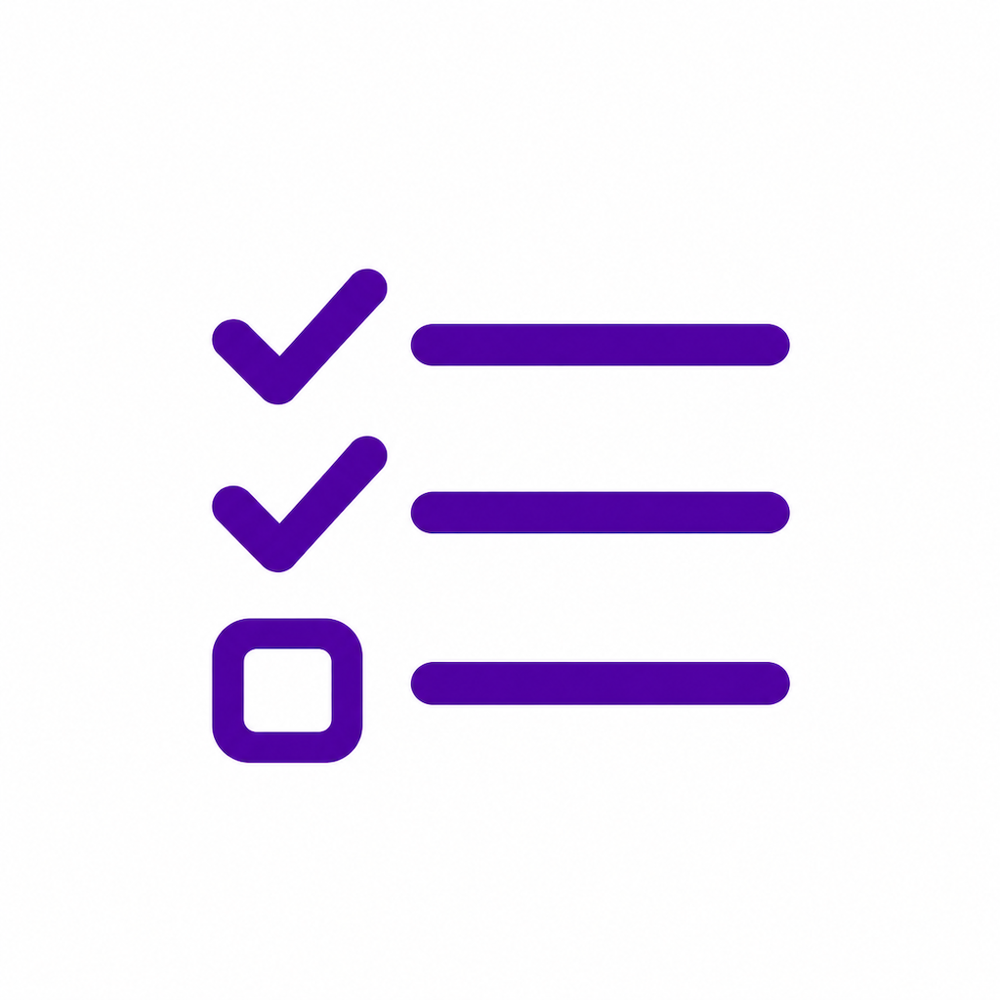
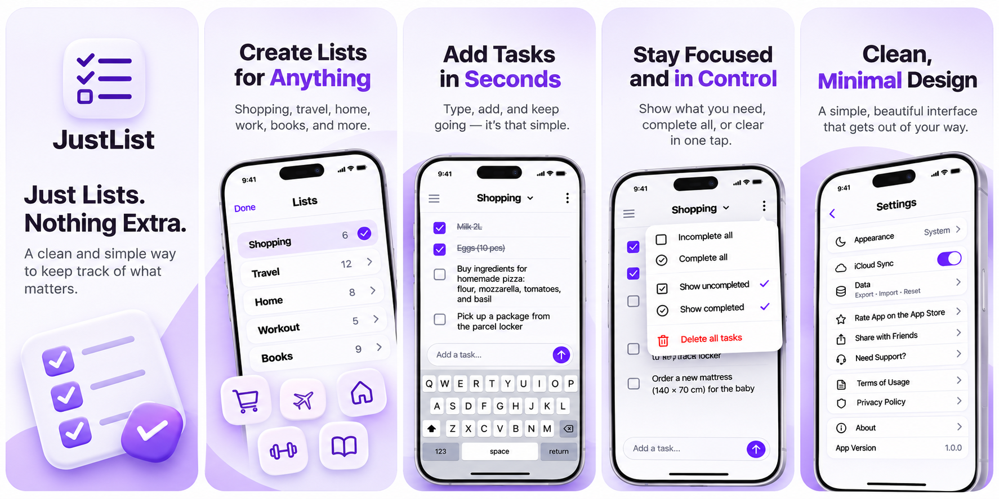

A list for anything.
Groceries, a packing list, or that book someone recommended. Keep each little corner of life in its own list.

Just List.A simpler kind of to-do app
Shopping lists. Weekend plans. All the little things.
Give them a home, then get on with your day.
Made for iPhone. Designed to stay out of your way.
An example list. Try a checkmark
No ads. No clutter. Just lists.
Small app. Everyday useful.
Groceries, a packing list, or that book someone recommended. Keep each little corner of life in its own list.
Share a list through iCloud. Plan with your partner or tackle the shopping together, with changes syncing between you.
Your lists stay with you, even without a connection. Keep checking things off. Shared changes sync when you’re back online.
Add a thought in seconds.
Check it off when you’re ready.
Keep the rest beautifully simple.

Less remembering. More living.